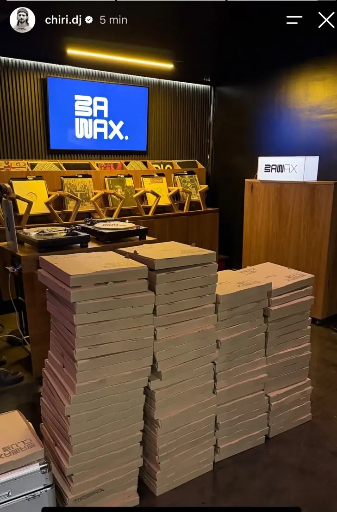

Cuando una marca tiene una comunidad alrededor de su negocio, una tienda online puede ser mucho más que un lugar para vender. BAWAX quería crear un espacio exclusivo para sus clientes y convertir esa comunidad en una experiencia dentro de su propia tienda. Así nació BAWAX Club: un proyecto de modernización y escalado que desarrollamos de punta a punta junto a su equipo.
El desafío: una comunidad que pedía más que productos
BAWAX no arrancó de cero: ya tenía clientes fieles, conversación activa y una identidad de marca clara. El problema era que esa comunidad no tenía un lugar propio dentro de la tienda. Las relaciones ocurrían fuera del ecommerce y el negocio no tenía forma de monetizar ni de recompensar esa fidelidad.
El objetivo fue claro desde el inicio: llevar la idea a la realidad, integrando el club a la tienda existente sin duplicar herramientas ni sumar fricción operativa.
Lo que BAWAX necesitaba resolver
- Un espacio exclusivo para miembros, integrado al ecommerce.
- Cobros recurrentes mensuales sin gestión manual.
- Beneficios diferenciados para quienes se sumaran al club.
- Control total del programa desde el panel de la propia tienda.
La solución: BAWAX Club, integrado a su ecommerce
Desarrollamos una solución integrada a su tienda online con todo lo que el proyecto necesitaba para funcionar desde el primer día:
- Suscripciones mensuales automáticas: los miembros se dan de alta una vez y la renovación ocurre sola, sin intervención manual.
- Mercado Pago: cobros online con los medios de pago que su comunidad ya usa y confía.
- Beneficios exclusivos para miembros: acceso a condiciones especiales que hacen valiosa la pertenencia al club.
- Gestión desde la propia tienda: altas, bajas, cobros y métricas se administran desde el mismo panel de BAWAX, sin sistemas paralelos.

Los números que validan la idea
El resultado apareció rápido: en solo 3 días, más de 60 personas se sumaron al Club de Vinilos. Más que un número, es la validación de una idea. Cuando una marca entiende a su comunidad y encuentra la forma de darle valor, una tienda online puede convertirse en un punto de encuentro.
Lo interesante no fue solo el lanzamiento, sino lo que vino después: el club creció con la misma tienda, sin rehacer la plataforma ni migrar a otro sistema. Eso es escalado real: crecer sobre una base sólida.
Tecnología que acompaña, no que limita
Este proyecto nos recuerda algo que buscamos constantemente en eStock: la tecnología no debería limitar las ideas de un negocio. Debería ayudar a hacerlas realidad.
Modernizar un ecommerce no es solo actualizar interfaces. Es diseñar la infraestructura para que una marca pueda lanzar productos, clubs, suscripciones o programas de fidelización sin empezar de cero cada vez. BAWAX Club es un ejemplo de eso: una idea de negocio traducida a una solución concreta, medible y escalable.
Qué hizo la diferencia en este proyecto
- Partimos de la comunidad real de BAWAX, no de una hipótesis.
- Integramos suscripción y cobro al ecommerce existente, no a una herramienta externa.
- Diseñamos la gestión para que el equipo opere todo desde un solo panel.
- Medimos desde el lanzamiento para iterar con datos.
Para quién es este modelo
- Marcas con una comunidad activa que quieren darle un espacio propio.
- Negocios que quieren generar ingresos recurrentes con suscripciones o membresías.
- Tiendas online que ya venden y buscan escalar sin cambiar de plataforma.
- Emprendedores con una idea clara que necesitan convertirla en una solución real.
Gracias BAWAX por confiar en nosotros para llevar esta idea a la realidad. Y esto recién empieza.
¿Tu marca tiene una comunidad que querés convertir en experiencia?
Contanos qué idea tenés en mente y te ayudamos a llevarla a tu tienda online, desde la modernización del ecommerce hasta el escalado del proyecto.
Hablar con eStock